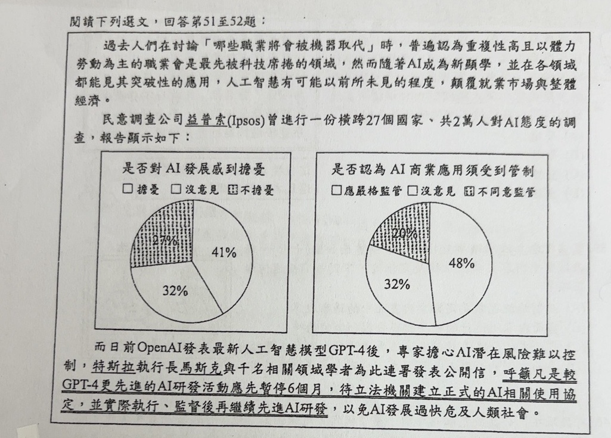
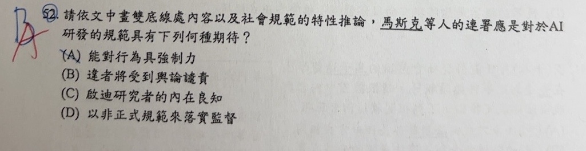

分享原卷｜第52題
完整原題
作答所需文章／材料
閱讀下列選文，回答第51至52題： 過去人們在討論「哪些職業將會被機器取代」時，普遍認為重複性高且以體力勞動為主的職業會是最先被科技席捲的領域，然而隨著AI成為新顯學，並在各領域都能見其突破性的應用，人工智慧有可能以前所未見的程度，顛覆就業市場與整體經濟。 民意調查公司益普索(Ipsos)曾進行一份橫跨27個國家、共2萬人對AI態度的調查，報告顯示如下。 而目前OpenAI發表最新人工智慧模型GPT-4後，專家擔心AI潛在風險難以控制，特斯拉執行長馬斯克與千名相關領域學者為此連署發表公開信， 【原卷畫雙底線】呼籲凡是較GPT-4更先進的AI研發活動應先暫停6個月，待立法機關建立正式的AI相關使用協定，並實際執行、監督後再繼續先進AI研發， 以免AI發展過快危及人類社會。| 態度 | 比例 |
|---|---|
| 擔憂 | 41% |
| 沒意見 | 32% |
| 不擔憂 | 27% |
| 態度 | 比例 |
|---|---|
| 應嚴格監管 | 48% |
| 沒意見 | 32% |
| 不同意監管 | 20% |
請依文中畫雙底線處內容以及社會規範的特性推論，馬斯克等人的連署應是對於AI研發的規範具有下列何種期待？
(A) 能對行為具強制力
(B) 違者將受到輿論譴責
(C) 啟迪研究者的內在良知
(D) 以非正式規範來落實監督
先想一想，再查看答案、解說與原圖
原卷作答：原卷藍筆B，紅筆訂正A。
(A) 能對行為具強制力
逐項解析
| 選項與原句 | 判讀 | 句意與判斷理由 |
|---|---|---|
| (A) 能對行為具強制力 | 應選 | 由立法機關建立並實際執行、監督，期待規範具有法律強制力。 |
| (B) 違者將受到輿論譴責 | 不選 | 輿論譴責可存在於連署階段，但不是畫雙底線所期待的立法後約束。 |
| (C) 啟迪研究者的內在良知 | 不選 | 內在良知屬道德自律，與正式立法監督不同。 |
| (D) 以非正式規範來落實監督 | 不選 | 原文期待正式規範，不能改判為以非正式規範監督。 |
詳細說明與解題步驟
題目問連署者對未來AI研發規範的「期待」，不是問目前公開信本身屬於什麼力量。雙底線明確提到由立法機關建立正式規範，且能實際執行、監督，指向以國家力量支持、具有外在強制力的法律，選A。
公開信及連署現在可以形成公共輿論，但這不表示公開信本身已有法律強制力。B只說輿論譴責，C是內在道德良知，D是非正式規範，均不足以對應原文期待立法後執行監督的方向。
本題文章把「協定」與立法並提，解題依其正式立法、執行、監督的完整語境判讀；不把任何私人協定都誤說成國家法律。原文「目前」「最新」是當時材料的用語，照留作原題，不表示GPT-4在現在仍是最新模型。
核對註記：已實開真正上傳原卷及本題裁切成品，核對完整題幹、全部選項、必要材料與解說。未提供實際考試日期，日期取本題首次使用者訊息（台灣時間）；無冊次或課次證據，歸綜合。
原圖（僅本題）

